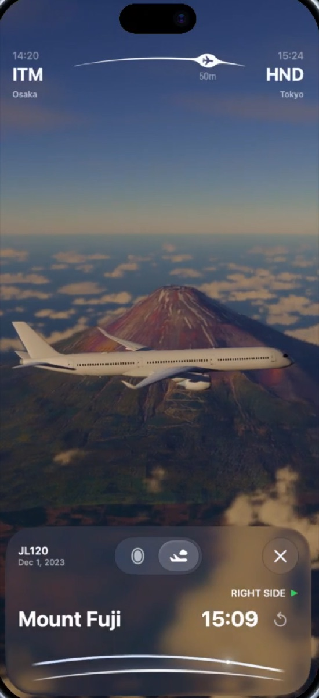
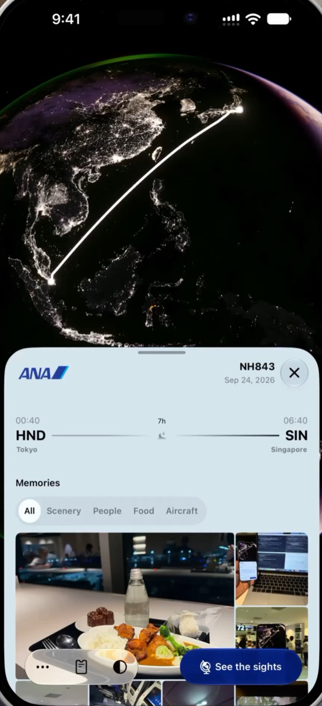
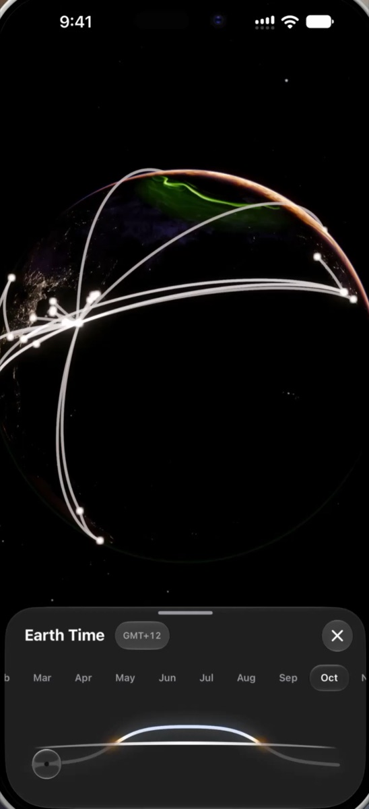

Raylie
See what's waiting outside.
搭乗券を読み込むだけで、窓の外にいつ、何が見えるかが分かる。
App Storeでダウンロード iPhone / iPad / Mac / Apple Vision Pro無料・アカウント登録不要・広告なし
ロック画面のライブアクティビティ
富士山まで、あと2分。右側の窓。
最高の一枚は、思いがけない瞬間にやってくる。Raylieはフライト中、次の見どころまでの時間と、左右どちらの窓から見えるかをロック画面とDynamic Islandに表示。シャッターを切るタイミングを逃しません。

見どころのタイムライン
離陸から着陸まで、空の予定表。
出発、日没、月の入り、オーロラ帯の通過、眼下の街や名所。フライト中のすべての見どころを時刻順に並べ、それぞれが左右どちらの窓から見えるかを案内します。
Journey と Memories
フライトごとに、撮った写真を「景色」「人」「食事」「機体」で自動整理。地球儀の上に描かれた航路と一緒に、旅を振り返れます。

リアルタイムの地球儀と Earth Time
あなたの全航路を、ひとつの地球に。
現在の雲、昼夜の境界、夜景、今夜のオーロラを地球儀に描画。これまでのフライトが弧となって重なり、Earth Timeのスライダーで季節や時刻を動かせば、世界の見え方が変わります。
Discover
場所を検索して近くを通る便や近隣の空港、いま上空を飛んでいる便を確認できます。

Apple Wallet、紙の搭乗券を読み込めます
カレンダー連携で自動追加もできます。過去のフライトもまとめて取り込めます。
-
✓
搭乗券、Wallet、写真、ファイル、リンクから QRコードをかざすだけで登録
-
✓
Flightyアプリから 過去のフライトを確実にすべて読み込みます
-
✓
AIを使ってGmailなどから Siri、ChatGPT、Claude、Geminiに対応
-
✓
カレンダー、予約のスクショから Apple Intelligenceを使います